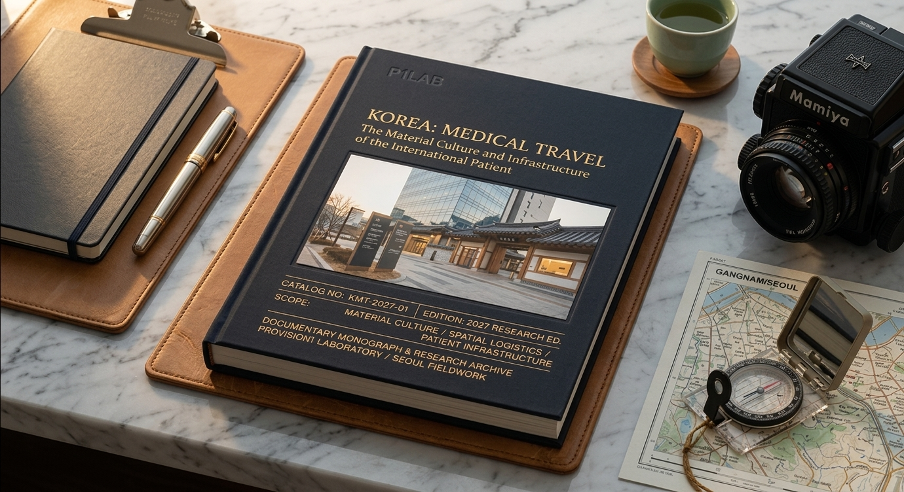
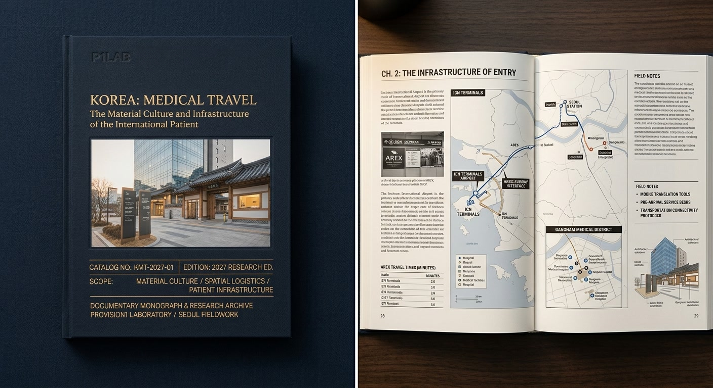

KOREA: MEDICAL TRAVEL is being built to occupy a missing layer in the international-patient journey: the independent, physical trust instrument between discovering Korean medical care and becoming sufficiently confident to act.
Korea does not lack information about its medical system. It lacks a single, independent English-language physical reference that allows an international prospective patient to understand the whole journey — arrival, transportation, communication, hospital coordination, accommodation, recovery, documentation, and departure — as one coherent system.
This publication documents that system.
It is not a medical guide, a hospital review, a tourism brochure, or an investigation of patients. It is an independent documentary study of the material culture, urban form, logistical infrastructure, human interfaces, and commercial systems surrounding the international patient.
A 75–100 word perspective from KHIDI addressing Korea's infrastructure for international medical patients and the patient journey from care search and contact through interpretation, transportation, accommodation, hospital coordination, recovery, and departure.
A documentary monograph examining what a city must build, coordinate, translate, transport, house, package, explain, and maintain when people cross national borders specifically to receive medical care.
International medical travel is ordinarily presented through procedures, hospitals, destinations, prices, and outcomes. This study begins somewhere else: with the physical and operational environment surrounding the patient. The international patient enters an airport, crosses a border, enters a vehicle, encounters translated systems, moves through a medical district, occupies a temporary recovery environment, receives objects and documentation, and eventually departs. Each transition requires infrastructure.
South Korea recorded 2,011,822 foreign patients in 2025, according to KHIDI's current reporting. The scale of that activity makes international medical travel not simply a collection of individual transactions, but a visible infrastructural and urban phenomenon.
What does a city have to build, sell, translate, design, transport, house, feed, and explain when millions of people arrive from other countries specifically to receive medical care?
The project follows the international patient through the built and translated world around medical care — not to evaluate the medicine itself, but to document the infrastructure that makes cross-border care possible.
The central proposition of the publication is that international medical travel requires more than discoverability. It requires confidence in an unfamiliar system.
Prospective patients can already find hospitals, procedures, destination information, prices, testimonials, official websites, agency materials, and promotional campaigns. What is less readily available is a coherent independent account of the complete physical experience surrounding international care.
The publication is designed for the interval between discovering Korean medical care and becoming sufficiently confident to inquire, coordinate, travel, and act. It renders unfamiliar infrastructure visible before the patient has to encounter it personally.
The project is conceived principally for an international English-language audience: prospective patients, spouses and families, referring professionals, facilitators, institutional decision-makers, and others who influence whether international care is considered viable.
The book does not reproduce institutional advertising. Its usefulness as a trust instrument depends upon documenting the ecosystem independently and allowing the physical evidence of the system to establish its own credibility.
A person should not have to be unusually intrepid to cross a national border for medical care. The system itself should make that decision understandable.
The book follows the international patient through the surrounding infrastructure rather than treating medical travel as a single hospital encounter.
How Korea and individual institutions become visible to international patients and the networks influencing their decisions.
International-patient desks, coordinators, interpreters, digital interfaces, forms, communication systems, and administrative preparation.
Airport interfaces, medical visas, specialized transfers, vehicles, routing, and the first physical movement into the Korean medical system.
Seoul's concentrated medical geography: districts, clinic streets, hospital zones, vertical buildings, signage, and urban navigation.
Hotels, recovery rooms, accessibility, food systems, room service, proximity to medical facilities, and the adapted environment surrounding treatment.
Packaging, prescriptions, instruction sheets, receipts, labels, pharmacy interfaces, recovery products, and digital systems carried through the journey.
Discharge, documentation, medication and recovery materials, onward transportation, and the physical transition out of the Korean system.
The final synthesis: how airport, hospital, translation, hospitality, commercial, and urban systems operate together at city scale.
The study is organized as a 36-topic documentary framework. The topics are deliberately confined to the material culture, urban form, logistical systems, human interfaces, and commercial infrastructure surrounding the international patient.
Topic 36 synthesizes the preceding 35 units. Airport gateways, transfer protocols, translation systems, concentrated medical districts, recovery hotels, material objects, facilitators, and commercial networks are examined not as isolated services but as components of a measurable urban and infrastructural system.
Research proceeds through direct observation, primary institutional knowledge, field photography, documentary evidence, and verification. The project remains deliberately on the public, infrastructural, material, and logistical side of the clinical boundary.
Direct observation of airports, streets, buildings, public interfaces, transportation systems, hospitality environments, signage, packaging, pharmacies, and other relevant physical infrastructure.
Interviews and institutional research with people responsible for operating, coordinating, translating, designing, transporting, housing, and supporting international patients.
Forms, labels, packaging, signage, wayfinding systems, digital interfaces, administrative objects, architectural details, maps, and other visible artifacts are treated as documentary evidence.
The project does not rank hospitals, assess clinical outcomes, provide medical advice, investigate individual patients, or reproduce confidential medical information. Its purpose is to render the surrounding system visible with accuracy and restraint.
The project is designed so that the large majority of fieldwork can be conducted through normal authorized observation of public and commercially accessible environments. Interior institutional documentation, interviews, and specific facility photography will be undertaken only with appropriate permission.
The finished publication is conceived as a substantial bound reference monograph rather than a disposable marketing publication. Its physical form is part of its function.
A designed physical record integrating field photography, primary reporting, institutional knowledge, maps, diagrams, documentary objects, contextual captions, and source records.
The monograph is intended to be owned, shelved, consulted, shared with family members, brought into professional conversations, and retained as a durable reference.
The primary edition is designed to communicate Korea's international-patient infrastructure to a global English-language readership without reproducing the tone or structure of institutional promotional material.
Seoul fieldwork: March 2027. Target global publication: Summer 2027.

Preliminary design study for the physical form of KOREA: MEDICAL TRAVEL. The publication is conceived as a substantial bound reference object, designed to function in the hand rather than merely on a screen.

Preliminary interior design study illustrating the intended relationship
between the physical publication, documentary photography, infrastructure,
material objects, and structured editorial analysis.
These images are preliminary visual touchstones rather than final production specifications. The final physical architecture, image selection, pagination, paper, binding, and production configuration will be determined as field research develops.
KOREA: MEDICAL TRAVEL is building a limited network of organizations whose work forms the international-patient infrastructure documented by the study.
Participation is structured as an institutional editorial partnership rather than conventional advertising. Participating organizations are documented as operational components of the system: their facilities, interfaces, expertise, services, physical environments, and institutional roles may become part of the published research record.
Participation provides no editorial control over research, subject selection, interpretation, or conclusions. The value of participation is authoritative representation within an independent documentary record.
Recognition within the project's institutional framework and master publication record.
Structured documentary treatment of the organization's role within the international-patient infrastructure.
Qualitative institutional knowledge incorporated into the research where relevant to the documentary framework.
Authorized photography and technical documentation of relevant physical facilities, interfaces, transport systems, or recovery environments.
Formal institutional acknowledgment within the project prospectus, publication, and associated launch materials.
Dedicated copies of the completed monograph for institutional, executive, referral, and other appropriate uses.
The finished monograph is designed not only to be read, but to be deployed through the international-patient ecosystem.
The book is a physical trust-and-conversion instrument for the ecosystem it documents.
Institutional purchasers may acquire finished copies at wholesale for selective distribution through existing patient-acquisition, referral, hospitality, diplomatic, professional, and international-patient networks.
Potential recipients include prospective patients, spouses and families, referring professionals, international-patient coordinators, facilitators, hospitality partners, corporate medical offices, and other decision-making intermediaries.
The objective is not mass promotional circulation. It is strategic placement of a durable independent reference at points where confidence and understanding influence whether international medical care is seriously considered.
The project combines institutional participation in the documentary record with wholesale acquisition of the finished physical publication. Organizations may therefore participate in the research and representation while also deploying the resulting reference through their own networks.
The organizations that make the system work have a reason to be authoritatively documented within it. The organizations that benefit from international patients have a reason to place the resulting reference into the hands of the people who influence their decisions.
Bound documentary reference monograph organized around a 36-topic editorial framework and a substantial documentary fieldwork archive.
International patients and their decision networks; global healthcare administrators; medical-travel facilitators; hospitality organizations; institutional and policy audiences.
Seoul · March 2027
Summer 2027
Requested 75–100 word institutional perspective on Korea's international-patient infrastructure and patient journey.
Material culture, urban form, logistics, translation, hospitality, commercial infrastructure, interfaces, and visible systems surrounding international medical care.